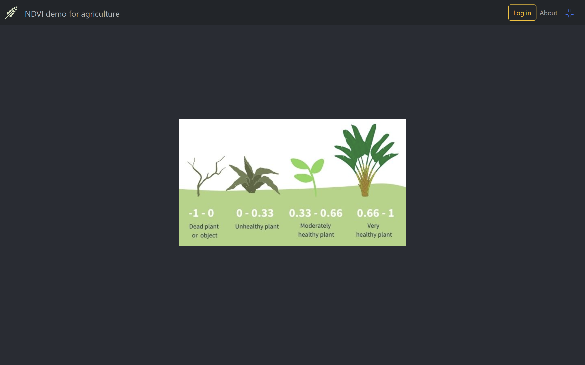

Overview
For use of this application the authentication is needed. An order to log in you must be registered.
On landing page view there is an button on navigationbar for open login dialog, which you can log in or
choose sign up if not registed before.
The Landing page

You can try/test the application by the link: Try the application
When you're asked to input or copy-paste GeoJSON geometry data, you can find examples in the following file: Geometries
For example, searching for "Akanpelto", which I’ve used in my examples, will load the data quickly because it already exists in MongoDB. Selecting another area will trigger the process of fetching data from Sentinel Hub and storing it into MongoDB Atlas, which typically takes several tens of seconds depending on the size of the area and how many NDVI maps are available for that period (currently, the settings includes data from both this year and last year).